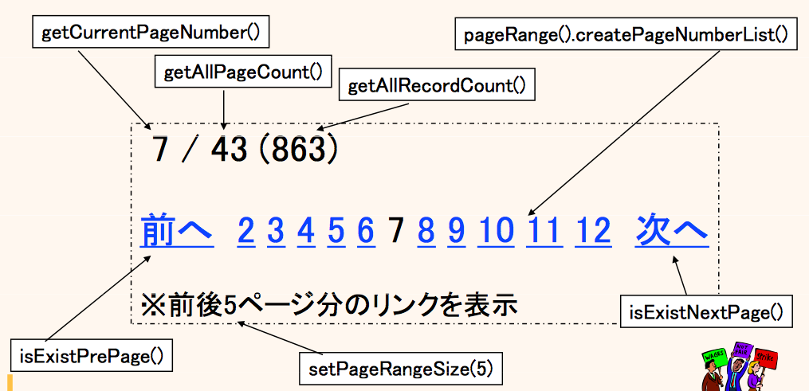

ページング検索
ページング検索とは？
そもそもページング検索とは？について説明するページがあります。
定型化されたページング検索
ConditionBean
一つの ConditionBean でページング検索の総レコード数取得と実データ取得の二つの処理を実行され、ページング条件は最大限DBMSのSQLの機能を使って実現されます。
ex) ConditionBeanでページング検索 {81-100} @DisplaySql
MemberCB cb = new MemberCB();
cb.query().setMemberName_PrefixSearch("S");
cb.paging(20, 5); // 1 ページ 20 件で、5 ページ目を検索 (81-100)
// 総レコード数取得と実データ取得
PagingResultBean<Member> page = memberBhv.selectPage(cb);
// ページング結果の計算処理
int allRecordCount = page.getAllRecordCount(); // 総レコード数
int allPageCount = page.getAllPageCount(); // 総ページ数
boolean isExistPrePage = page.isExistPrePage(); // 前のページがあるか？
boolean isExistNextPage = page.isExistNextPage(); // 次のページがあるか？
for (Member member : page) { // 実データのループ(java.util.Listの実装型)
...
}
そして、検索結果がページング結果の計算ロジックを持っています。
外だしSQL(OutsideSql)
一つの外だしSQLでページング検索の総レコード数取得と実データ取得の二つの処理を実行され、 ページング条件はSQLの機能を利用するか(ManualPaging)、カーソルでの(自動の)絞り込みをするか(AutoPaging)を選択できます。
厳密なパフォーマンス考慮のために "SQLスキップ" を利用する場合は、ManualPaging を利用します。
一方、実装のし易さを考慮して "カーソルスキップ" を利用する場合は、AutoPaging を利用します。
ex) PostgreSQLでOutsideSqlのManualPagingでページング検索のSQL {81-100} @OutsideSql
/*IF pmb.isPaging()*/
select ...
-- ELSE select count(*)
/*END*/
from ...
where ...
/*IF pmb.isPaging()*/
order by ...
offset /*$pmb.pageStartIndex*/80 limit /*$pmb.fetchSize*/20
/*END*/
ex) PostgreSQLでOutsideSqlのManualPagingでページング検索の呼び出し {81-100} @Java
SimpleMemberPmb pmb = new SimpleMemberPmb();
pmb.setMemberName_PrefixSearch("S");
pmb.paging(20, 5); // 1 ページ 20 件で、5 ページ目を検索 (81-100)
// 総レコード数取得と実データ取得
PagingResultBean<SimpleMember> page
= memberBhv.manualPaging().selectPage(path, pmb, entityType);
// ページング結果の計算処理
int allRecordCount = page.getAllRecordCount(); // 総レコード数
int allPageCount = page.getAllPageCount(); // 総ページ数
boolean isExistPrePage = page.isExistPrePage(); // 前のページがあるか？
boolean isExistNextPage = page.isExistNextPage(); // 次のページがあるか？
for (Member member : page) { // 実データのループ(java.util.Listの実装型)
...
}
そして、検索結果がページング結果の計算ロジックを持っています。
様々な考慮
総レコード数取得を先に実行
ConditionBean、外だしSQLのどちらにせよ、総レコード数取得が先に実行されます。CB もしくは Pmb の指定で、enablePagingCountLater() を呼び出すと、総レコード数取得を後にすることができます。どちらにせよ、それぞれ最大限やらなくて良い処理はスキップされるようになっています。 (例えば、デフォルトの状態では、総レコード数取得が 0 件の場合は、実データ処理は実行されない)
存在しないページが指定された時の再検索
また、すれ違いが発生して、総ページ数よりも大きいページ番号を指定されて検索された場合は、自動で(本当に存在する)最後のページを再検索します。 よって、この仕組みが組み込まれているため、不意に矛盾のある空っぽの画面が表示されにくいようになっています。CB もしくは Pmb の指定で、disablePagingReSelect() を呼び出すと、この再検索の処理を無効にすることができます。
ページングナビゲーション
ページング検索の検索結果である PagingResultBean クラスが、ページングナビゲーションのための計算ロジックを持っており、 より安全に定型的にページングナビゲーション構築のための計算処理を行うことができます。
図 : ページングナビゲーションの対応図 (PageRange) 
{kind=link}
Exampleのススメ
dbflute-basic-example では、テストケースの中で実際にページング検索を利用しています。 また、dbflute-ymir-example や dbflute-sastruts-example では、WEBフレームワークと合わせた場合のページング検索のExampleがあります。 (他の多くのExampleでも同様に利用されています)